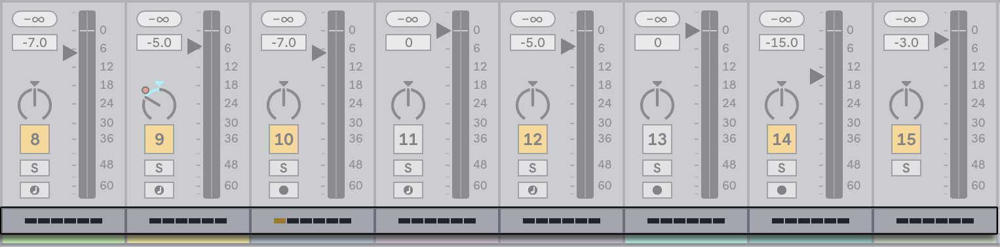
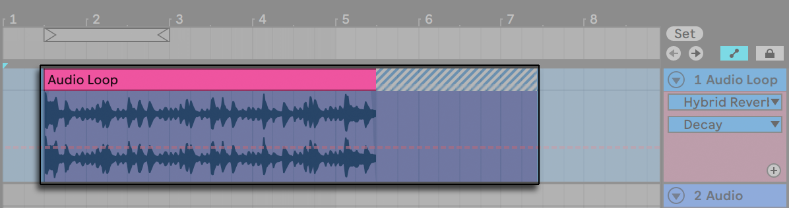

37. Computer Audio Resources and Strategies
Real-time audio processing can be a demanding task for general-purpose computers, which are usually designed to run spreadsheets and surf the Internet. An application like Live requires a powerful CPU and a fast SSD. This chapter will provide some insight on how you can avoid and solve computer resource issues when using Live.
37.1 Managing the CPU Load
To output a continuous stream of sound through the audio hardware, Live has to perform a huge number of calculations every second. If the processor can’t keep up with what needs to be calculated, the audio will have gaps or clicks.
Factors that affect computational speed include processor clock rates (e.g., speed in MHz or GHz), architecture, temperature (in hot environments, modern CPUs will “thermal throttle” and slow down the CPU processing rate), memory cache performance (how efficiently a processor can grab data from memory), and system bus bandwidth — the computer’s “pipeline“ through which all data must pass.
Fortunately, Live supports multicore and multiprocessor systems, allowing the processing load from things like instruments, effects, and I/O to be distributed among the available resources. Depending on the machine and the Live Set, the available processing power can be several times that of older systems.
37.1.1 The CPU Load Meter
The Control Bar’s CPU meter displays how much of the computer’s computational potential is currently being used. For example, if the displayed percentage is 10 percent, the computer is just coasting along. If the percentage is 100 percent, the processing is being maxed out — it’s likely that you will hear gaps, clicks or other audio problems.
Note that the CPU meter takes into account only the load from processing audio, not other tasks the computer performs (e.g., managing Live’s user interface).
The CPU meter can display the Average or Current CPU usage, or it can be switched off entirely.
The Average CPU meter displays the average percentage of the CPU currently processing audio, rather than the overall CPU load. The Current CPU meter displays the total current CPU usage.
You can click on the CPU meter to display the various options.

By default, Live will not display the Current level; it must be enabled from the drop-down menu.
In new installations of Live 11, the CPU Overload Indicator will also be switched off by default. This option can be re-enabled from the drop-down menu as needed by selecting Warn on Current CPU Overload.
To determine the CPU load, Live calculates the time it needs to process one audio buffer. This value is then compared to the time it takes to actually play one audio buffer.
For example, a value of 50% on the CPU meter means that Live is processing one audio buffer twice as fast as it takes to play the buffer.
Values over 100% are possible when the calculation takes more time than it does to play one audio buffer.
Live expects that the audio thread will have the highest priority, however the final prioritization of threads is done by the operating system, meaning Live’s processing might get interrupted. This is why other applications may cause CPU spikes in Live’s CPU meter.
37.1.2 CPU Load from Multichannel Audio
One source of constant CPU drain is the process of moving data to and from the audio hardware. This drain can be minimized by disabling any inputs and outputs that are not required in a project. There are two buttons in the Audio Settings to access the Input and Output Configuration dialogs, which allow activating or deactivating individual ins and outs.
Live does not automatically disable unused channels, because the audio hardware drivers usually produce an audible “hiccup“ when there is a request for an audio configuration change.
37.1.3 CPU Load from Tracks and Devices
Generally, every track and device being used in Live incurs some amount of CPU load. However, Live is “smart“ and avoids wasting CPU cycles on tracks and devices that do not contribute anything useful.
For example, dragging devices into a Live Set that is not running does not significantly increase the CPU load. The load increases only as you start playing clips or feed audio into the effects. When there is no incoming audio, the effects are deactivated until they are needed again. If the effect produces a “tail,“ like reverbs and delays, deactivation occurs only after all calculations are complete.
While this scheme is very effective at reducing the average CPU load of a Live Set, it cannot reduce the peak load. To make sure your Live Set plays back continuously, even under the most intense conditions, play back a clip in every track simultaneously, with all devices enabled.
In the Session View, it is possible to see each track’s impact on the CPU load by clicking on the Show/Hide Performance Impact selector in the Mixer Section.

In the Performance Impact section, each track has its own CPU meter with six rectangles that light up to indicate the relative impact of that track on the CPU level of the current Set. Freezing the track with the largest impact or removing devices from that track will usually reduce the CPU load.

37.1.4 Track Freeze
Live‘s Freeze Track command can greatly help in managing the CPU load incurred by devices and clip settings. When you select a track and execute the Freeze Track command, Live will create a sample file for each Session clip in the track, plus one for the Arrangement. Thereafter, clips in the track will simply play back their “freeze files“ rather than repeatedly calculating processor-intensive device and clip settings in real time. The Freeze Track command is available from Live‘s Edit menu and from the context menu of tracks and clips. Be aware that it is not possible to freeze a Group Track; you can only freeze tracks that hold clips.
Normally, freezing happens very quickly. But if you freeze a track that contains an External Audio Effect or External Instrument that routes to a hardware effects device or synthesizer, the freezing process happens in real-time. Live will automatically detect if real-time freezing is necessary, and you‘ll be presented with several options for managing the process. Please see the section on real-time rendering for an explanation of these options.
Once any processing demands have been addressed (or you have upgraded your machine!), you can always select a frozen track and choose Unfreeze Track from the Edit menu to change device or clip settings. On slower machines, you can unfreeze processor-intensive tracks one at a time to make edits, freezing them again when you are done.
Many editing functions remain available to tracks that are frozen. Launching clips can still be done freely, and mixer controls such as volume, pan, and the sends are still available. Other possibilities include:
- Edit, cut, copy, paste, duplicate, and trim clips.
- Draw and edit mixer automation and mixer clip envelopes.
- Consolidate clips.
- Record Session View clip launches into the Arrangement View.
- Create, move, and duplicate Session View scenes.
- Drag frozen MIDI clips into audio tracks.
When performing edits on frozen tracks that contain time-based effects such as reverb, you should note that the audible result may be different once the track is again unfrozen, depending on the situation. This is because, if a track is frozen, the applied effects are not being calculated at all, and therefore cannot change their response to reflect edited input material. When the track is again unfrozen, all effects will be recalculated in real time.

Frozen Arrangement View tracks will play back any relevant material extending beyond the lengths of their clips (e.g., the “tails“ of Reverb effects). These frozen tails will appear in the Arrangement as crosshatched regions located adjacent to their corresponding clips. They are treated by Live as separate, “temporary“ clips that disappear when unfrozen, since the effect is then calculated in real time. Therefore, when moving a frozen clip in the Arrangement, you will usually want to select the second, frozen tail clip as well, so that the two remain together.
For frozen Session clips, only two loop cycles are included in the frozen clip, which means that clips with unlinked clip envelopes may play back differently after two loop cycles when frozen.
Dragging a frozen clip to the drop area in the Session View or Arrangement View will create a new frozen track containing that clip. If a clip is partially selected in the Arrangement, the new frozen track will contain the selected portion of the clip only.
The samples generated by the Freeze Track command are stored in the Current Project folder under /Samples/Processed/Freeze. If the Set has not yet been saved, the folder location will be specified by the Temporary Folder. Please note that freeze files for tracks that contain an External Instrument or External Audio Effect will be discarded immediately when unfreezing.
Besides providing an opportunity to conserve CPU resources on tracks containing a large number of devices, the Track Freeze command simplifies sharing projects between computers. Computers that are a bit low on processing power can be used to run large Live Sets as long as any CPU-intensive tracks are frozen. This also means that computers lacking certain devices used in one Live Set can still play the Set when the relevant device tracks are frozen.
37.2 Managing the Disk Load
An SSD’s read/write speed can affect Live’s performance. The amount of disk traffic Live generates is roughly proportional to the number of audio channels being read or written simultaneously. For example, a track playing a stereo sample causes more disk traffic than a track playing a mono sample.

The Disk Overload indicator flashes when the disk was unable to read or write audio quickly enough. When recording audio, this condition causes a gap in the recorded sample; when playing back, you will hear dropouts.
Do the following to avoid disk overload:
- Reduce the number of audio channels being written by choosing mono inputs instead of stereo inputs in the Audio Settings’ Channel Configuration dialog.
- Use RAM Mode for selected clips.
- Reduce the number of audio channels playing by using mono samples instead of stereo samples when possible. You can convert stereo samples to mono using any standard digital audio editing program, which can be called up from within Live.